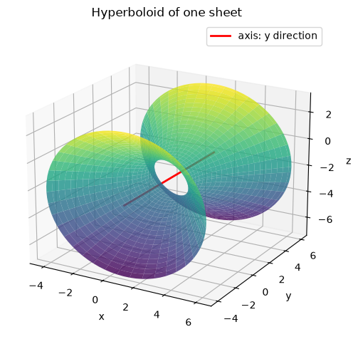
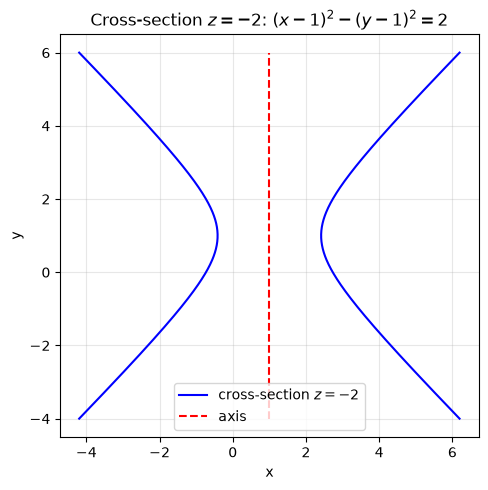
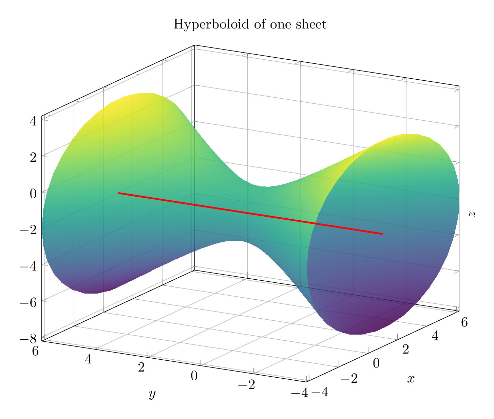
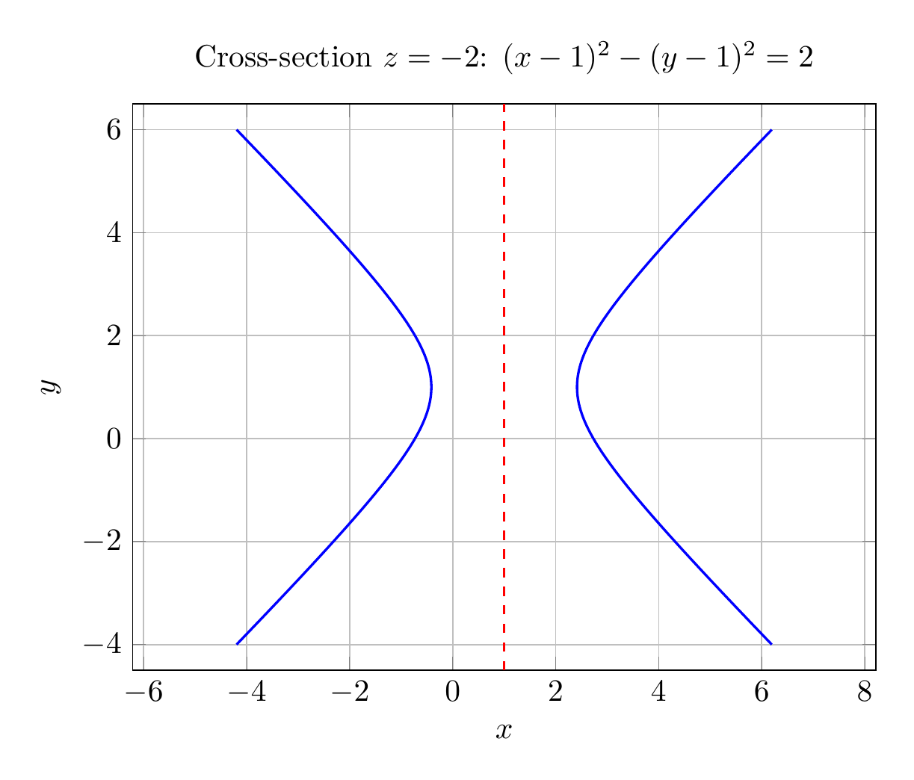

Path: mcma-Nex-N2-Pro/calculus-12.6.36/chat_20260825_022227_095726_utc_0800
Problem
Please solve the math problem in the image.

End of problem
Answer
Complete the squares:
\[
x^2-2x=(x-1)^2-1,\qquad -y^2+2y=-(y-1)^2+1,\qquad z^2+4z=(z+2)^2-4.
\]
So the equation becomes
\[
(x-1)^2-(y-1)^2+(z+2)^2-2=0,
\]
or, in standard form,
\[
\frac{(x-1)^2}{2}+\frac{(z+2)^2}{2}-\frac{(y-1)^2}{2}=1.
\]
This is a **hyperboloid of one sheet**, centered at \((1,1,-2)\), with its axis parallel to the \(y\)-axis. Cross-sections \(y=\text{constant}\) are circles/ellipses, and the cross-section \(z=-2\) is the hyperbola \((x-1)^2-(y-1)^2=2\).
\[
\boxed{\frac{(x-1)^2}{2}+\frac{(z+2)^2}{2}-\frac{(y-1)^2}{2}=1,\ \text{hyperboloid of one sheet, axis parallel to the }y\text{-axis}}
\]
---




\documentclass[border=10pt]{standalone}
\usepackage{pgfplots}
\pgfplotsset{compat=1.18}
\begin{document}
\begin{tikzpicture}
\begin{axis}[
width=12cm, height=10cm,
xlabel={$x$}, ylabel={$y$}, zlabel={$z$},
title={Hyperboloid of one sheet},
view={-60}{20},
grid=major,
domain=0:2*pi,
y domain=-4:6,
samples=35,
samples y=25,
colormap/viridis,
zlabel style={at={(axis description cs:1.05,.5)}}
]
\addplot3[surf, shader=interp, opacity=0.85]
({1 + sqrt(2 + (y-1)^2)*cos(deg(x))},
{y},
{-2 + sqrt(2 + (y-1)^2)*sin(deg(x))});
\addplot3[red, very thick, samples y=0] coordinates {(1,-4,-2) (1,6,-2)};
\end{axis}
\end{tikzpicture}
\end{document}

\documentclass[border=10pt]{standalone}
\usepackage{pgfplots}
\pgfplotsset{compat=1.18}
\begin{document}
\begin{tikzpicture}
\begin{axis}[
width=10cm, height=8cm,
xlabel={$x$}, ylabel={$y$},
title={Cross-section $z=-2$: $(x-1)^2-(y-1)^2=2$},
grid=major,
domain=-4:6,
samples=200,
axis equal,
xmin=-4.5, xmax=6.5,
ymin=-4.5, ymax=6.5
]
\addplot[blue, thick, domain=-4:6] ({1 + sqrt(2 + (x-1)^2)}, {x});
\addplot[blue, thick, domain=-4:6] ({1 - sqrt(2 + (x-1)^2)}, {x});
\addplot[red, dashed, thick] coordinates {(1,-4.5) (1,6.5)};
\end{axis}
\end{tikzpicture}
\end{document}

End of answer